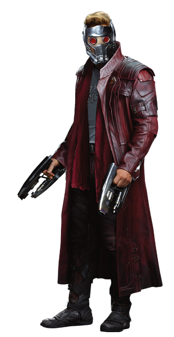

|  | ||
| Звездный Лорд | Питер Джейсон Квилл | |
|---|---|---|
| Вымышленный супергерой, появляющийся в комиксах издательства Marvel Comics. Созданный Стивом Инглхартом и Стивом Ганом, персонаж дебютировал в Marvel Preview. Будучи сыном землянки Мередит Квилл и спартанца Ясона, Питер Квилл принял имя Звездного Лорда, космического полицейского. | ||